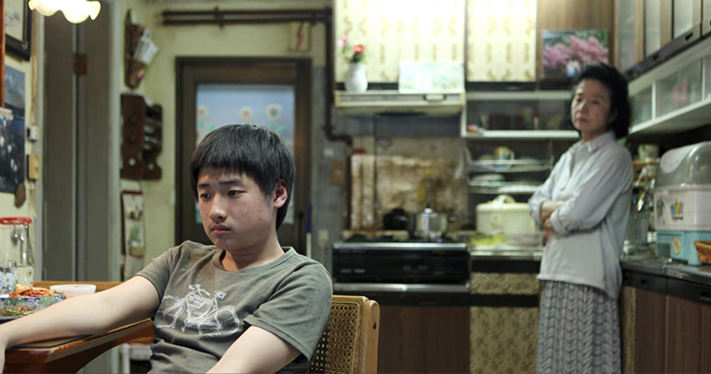
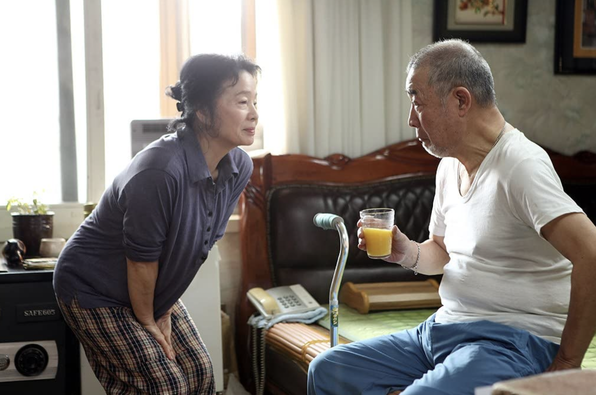
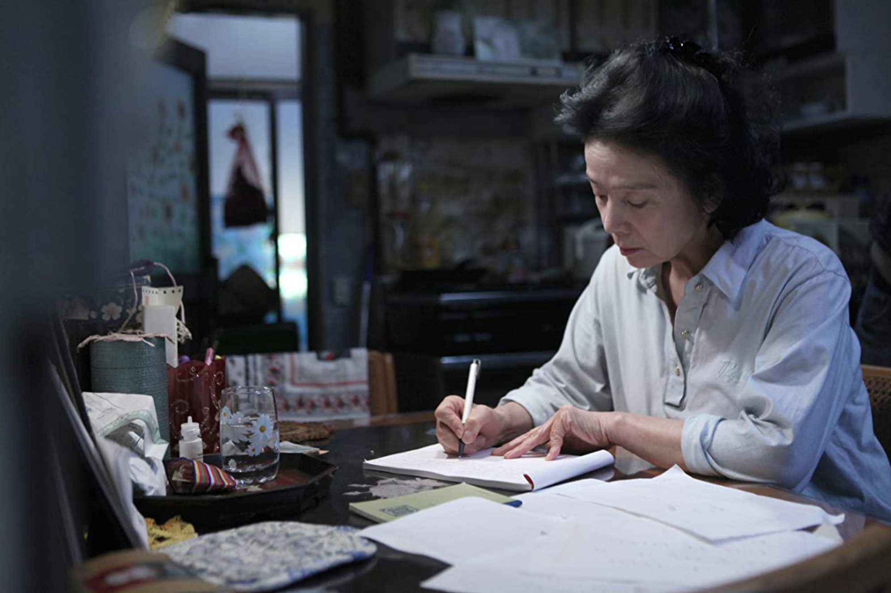

Poetry
A Film Review
Jang Mi-ja has just started to develop alzheimers. Given the
other obstacles she faces
raising an unruly miscreant of a grandson,

fending off employer sexual advances,

and learning to write poetry

this film about her is surprisingly placid. Jang Mi-jan's way
of living is something we can admire.
This film caused me to research the concept of blood
money. It turns out that paying blood money has
a surprising counterpart in American jurisprudence. To
understand the similarity think of the trials of O.J. Simpson.
First there was a criminal trial which acquitted him of the
charge of murdering his ex-wife and a friend. Then the
friend's father sued Simpson in civil court and won a monetary
judgement. This kind of monetary payment is a lot like blood
money.
In both cases, there is a separate legal mechanism for
handling cases which the criminal court system cannot.
“Poetry” shows us a caring, intelligent, working-class
woman who has been deeply shamed. She handles her situation
in a way that is both unique to her and yet Korean.
As the film ends Jan Mi-jan's poetry teacher reads a poem
she has managed to write. I think if you can view “Poetry”
through Asian eyes you will the ending bittersweet.
More reviews and information about finding streaming sources
at
Watch and Talk